#356 中庭用務動線候補と現行中庭
同じseed・保存地点・人物・敵・商品を用い、到着と再読込後の本編GameShellを比較。1440×900 / iPad相当1024×768のブラウザ画面であり、物理iPadではない。背景は未採用候補。
seed42 · Act1 · 12F 購買
#304の棚が左の空き区画に接地するか。
現行の開けた中庭 · 1440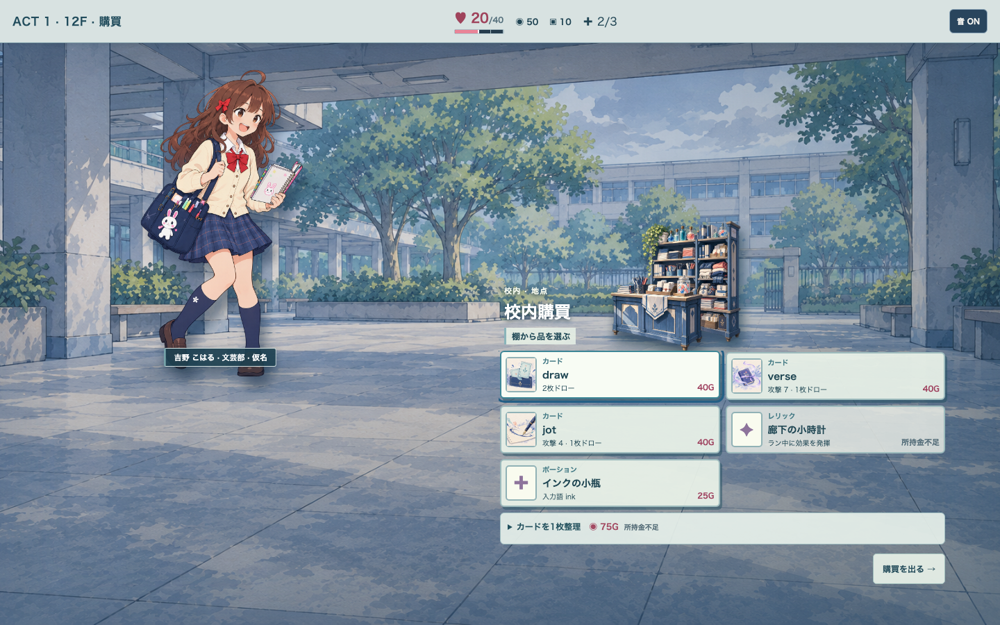
候補の屋根付き用務通路 · 1440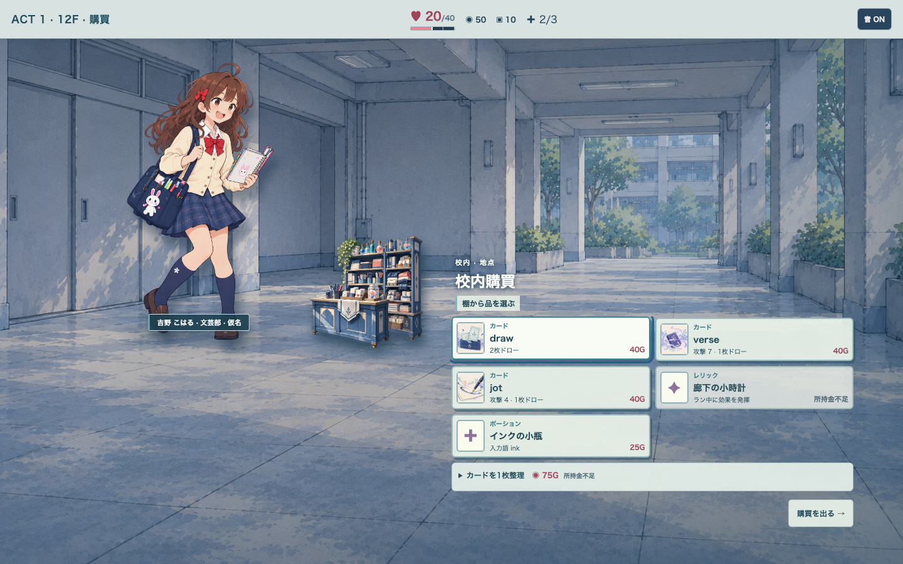
現行の開けた中庭 · 1024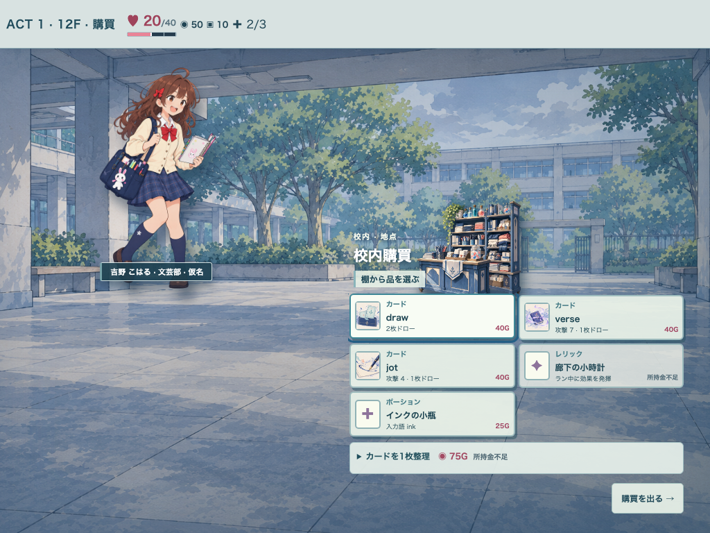
候補の屋根付き用務通路 · 1024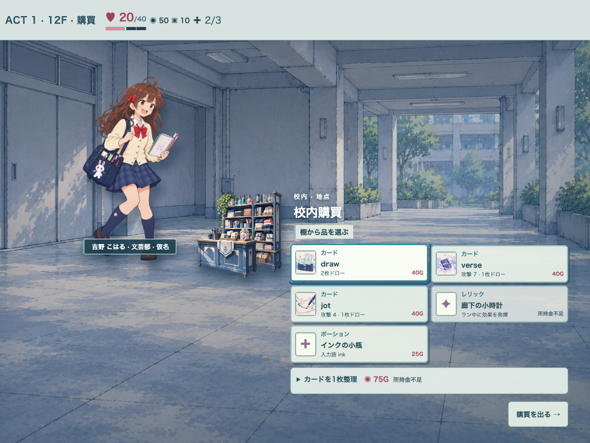
seed97 · Act1 · 11F イベント
#304の掲示板を通路に重ねても奥行きが読めるか。
現行の開けた中庭 · 1440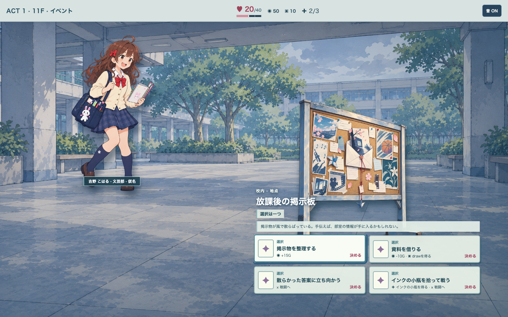
候補の屋根付き用務通路 · 1440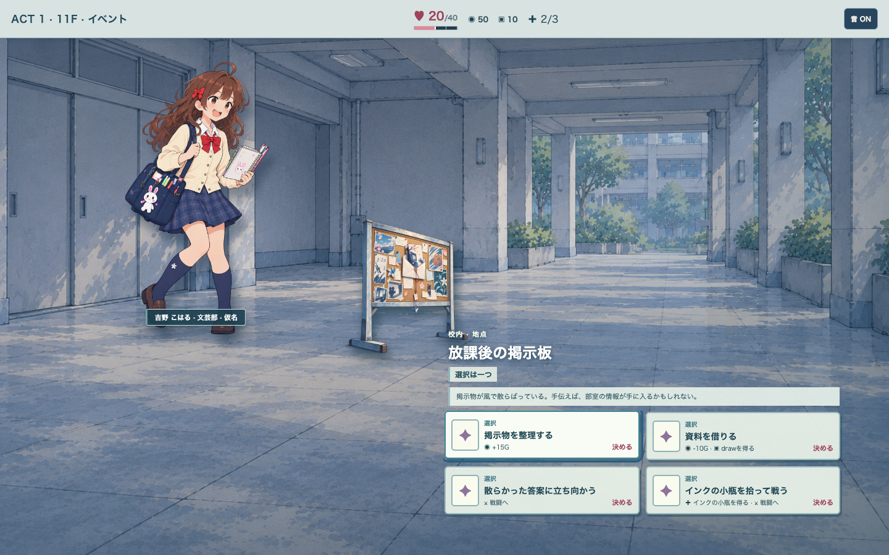
現行の開けた中庭 · 1024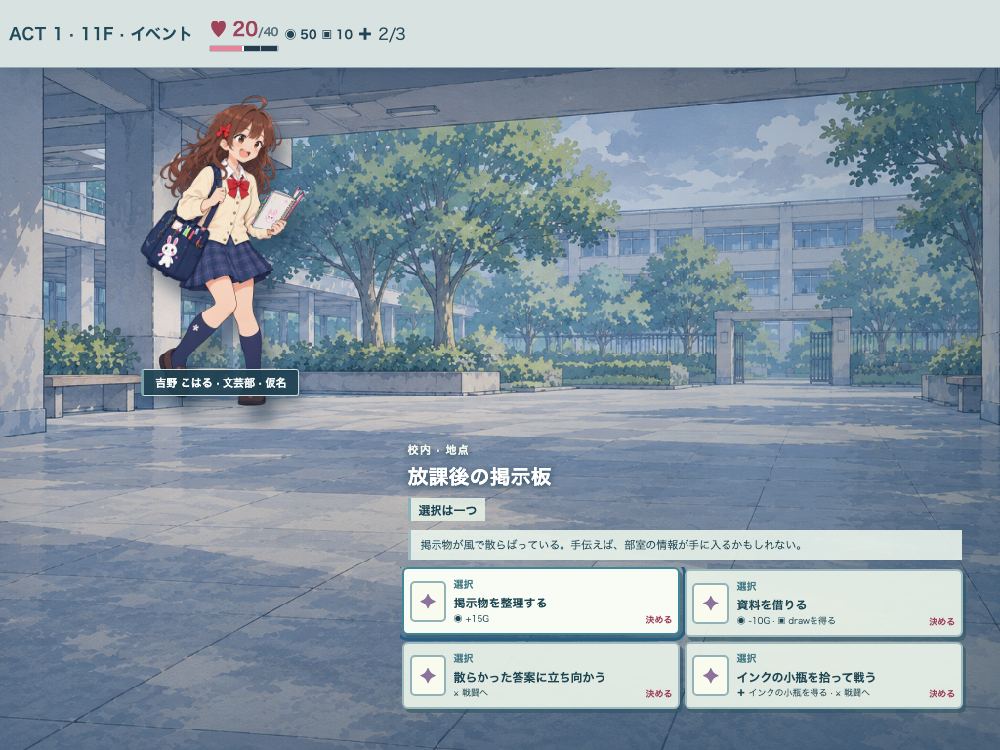
候補の屋根付き用務通路 · 1024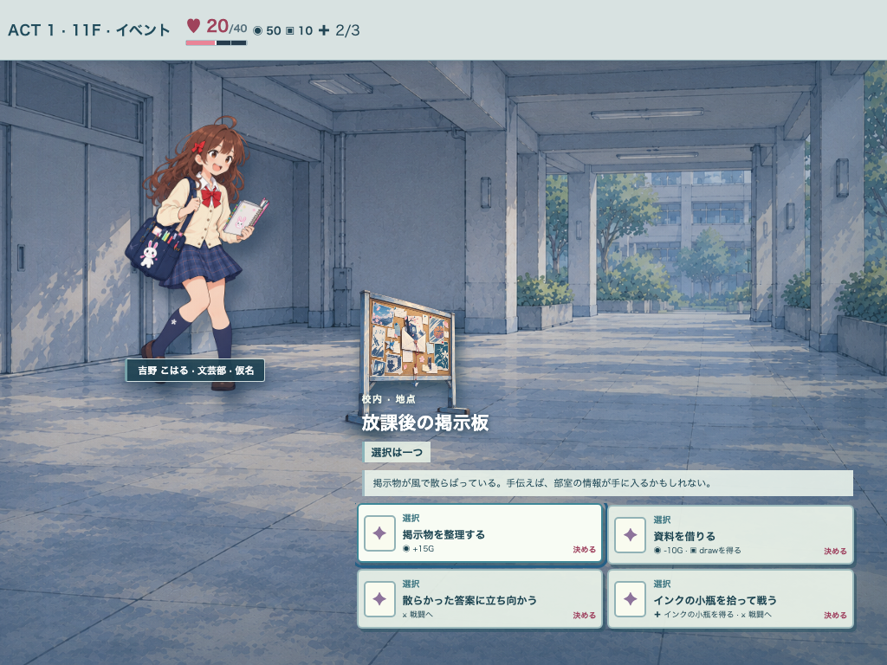
seed97 · Act1 · 12F 強敵
人物1人・敵2体の足元と入力・Intentが読めるか。
現行の開けた中庭 · 1440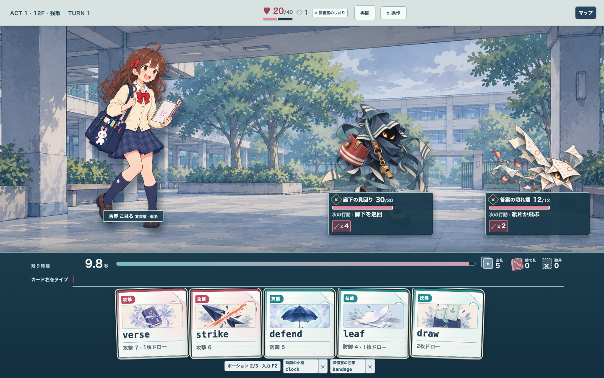
候補の屋根付き用務通路 · 1440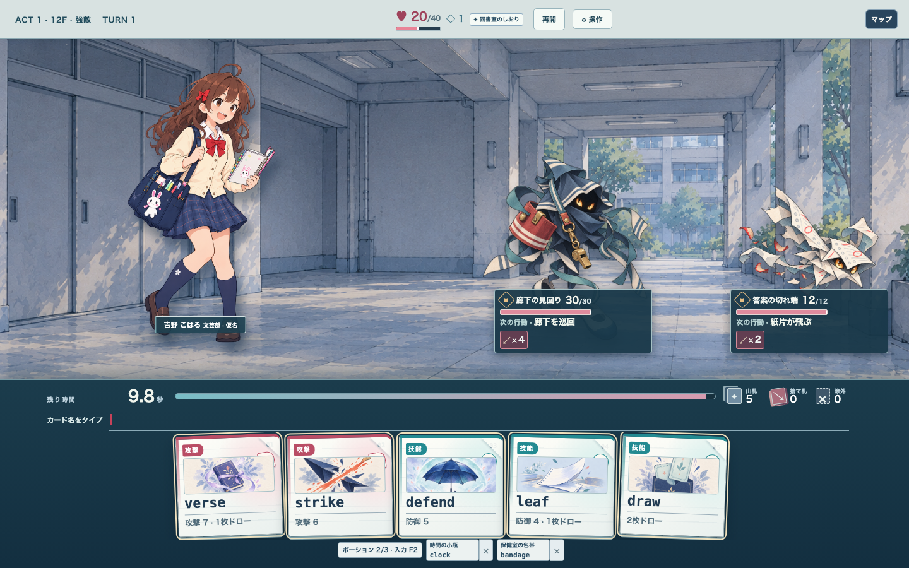
現行の開けた中庭 · 1024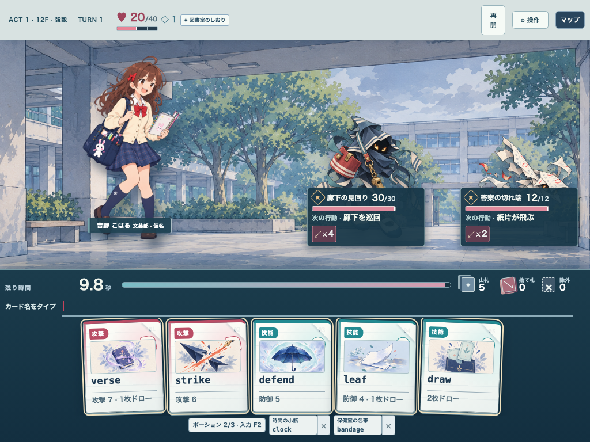
候補の屋根付き用務通路 · 1024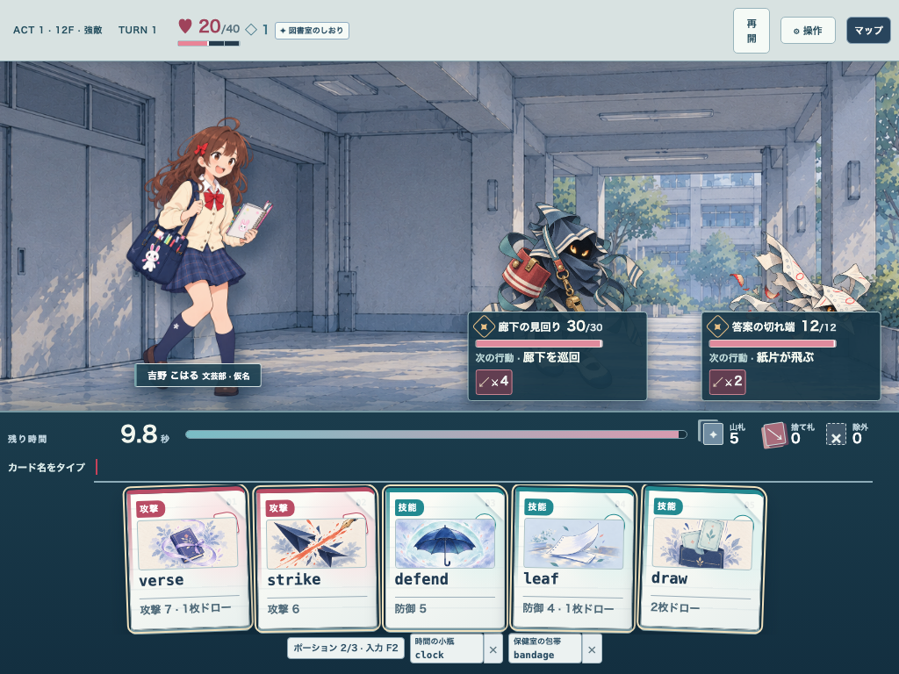